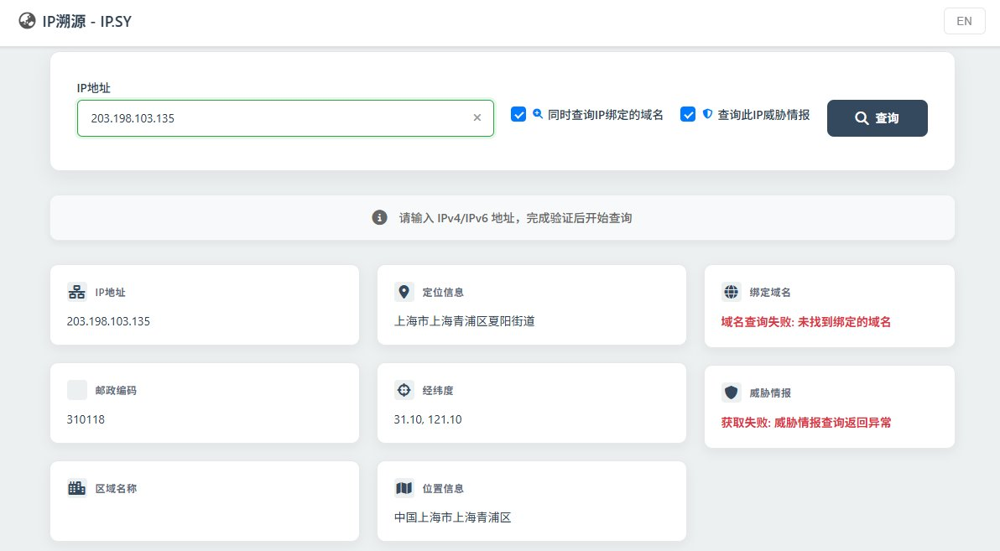

混用和独享各有各的好处，一句话简单总结，也接受指责和批评。
混用：经典机场万人骑，从探针的角度来看，用户飘忽不定难以建立模型，但IP风控会提升
独享：买个VPS自建翻墙节点自用，如挂着VPN点美团外卖，会被美团定位API采集泄露大致区域数据
建议参考 https://t.co/8gzecUgBOd 等工具寻求查询泄露
混用：经典机场万人骑，从探针的角度来看，用户飘忽不定难以建立模型，但IP风控会提升
独享：买个VPS自建翻墙节点自用，如挂着VPN点美团外卖，会被美团定位API采集泄露大致区域数据
建议参考 https://t.co/8gzecUgBOd 等工具寻求查询泄露
